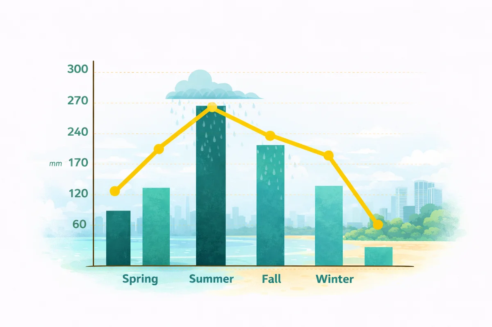
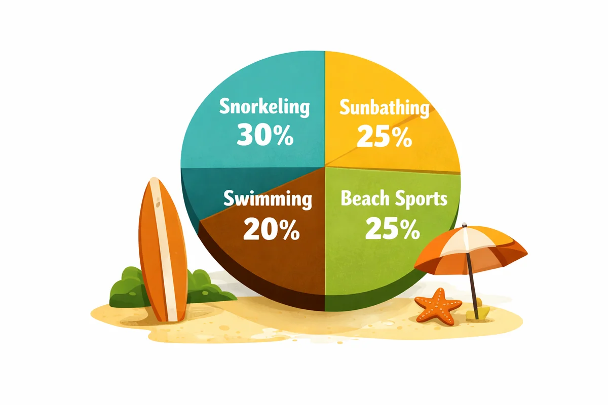
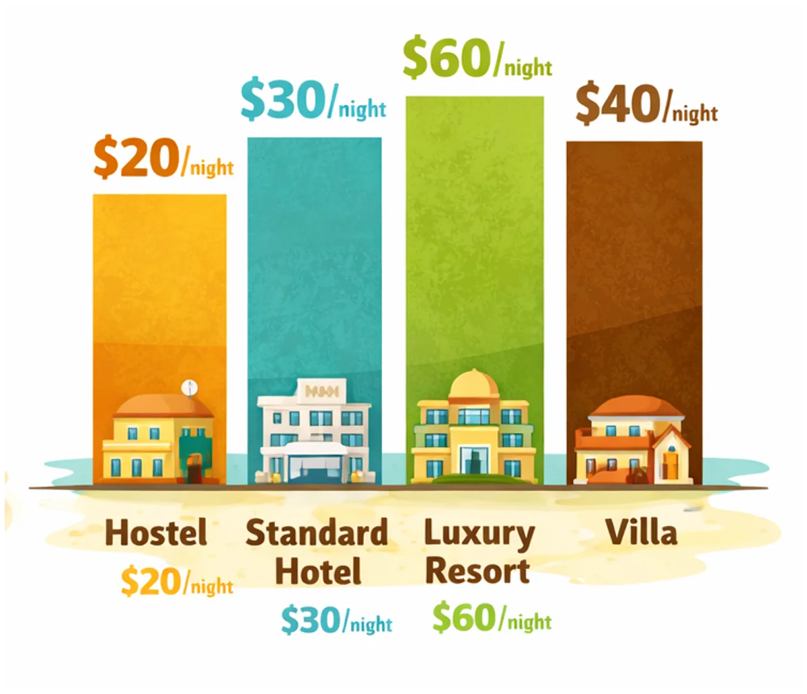

Thailand's City That Never Sleeps
Pattaya Pulse:
Food, Sun and Neon Nights
From bustling promenades to nearby islands, the city offers an energetic and diverse escape. Discover Pattaya City, with vibrant nightlife and rich cultural landmarks.
- Date:
- Reading time:
- 7 min.
- Read:
- 46
- Shared:
- 23
Pattaya doesn't ease you in — it grabs you. One minute you're stepping off the bus, the next you're swept into a stream of scooters, street vendors and salt air rolling in off the gulf. The city runs on a rhythm all its own: lazy afternoons on the sand, then a nightlife that pulls the whole promenade awake after dark. Beyond the neon, there's more here than the postcards suggest — quiet temples, offshore islands, and food stalls that alone are worth the trip. Whatever pace you're after, Pattaya has a version of the day waiting for you.
Rain periods in Pattaya

Timing matters here. Rainfall climbs steeply into the summer months, peaking at well over 250 mm when the monsoon settles in — expect short, heavy downpours rather than all-day grey. Autumn stays wet before things ease off, and by winter the city dries out to its calmest, most comfortable stretch. If you're chasing sun and dry beach days, the winter window is your safest bet. Travel in summer and you'll trade a little planning for fewer crowds and greener surroundings — just pack for the rain and keep your days flexible.
Popular beach activities
The water does most of the talking here. Snorkeling leads the pack at 30 %, with the nearby islands offering clear, shallow reefs that are easy to reach on a day trip. Sunbathing and beach sports each pull a solid 25 %, while swimming rounds things out at 20 % — proof that most visitors would rather be in the sea than beside it.

Accommodation expenses
There's a bed here for every budget. A hostel runs around $20 a night, a standard hotel about $30, and a private villa roughly $40 — comfortable without the splurge. Luxury resorts top the scale at $60, but even that stays gentle compared to most beach destinations. Pattaya lets you spend little or lean in, without cutting the trip short.

Once the sun drops, Pattaya changes gear entirely. The promenade fills up, the food stalls fire back to life, and the choice becomes less about what to do and more about how late you want to stay out. This is where the city earns its reputation — but it's also where it surprises you. Slip a few streets back from the water and you'll find quiet noodle shops, night markets stacked with fresh papaya, and rooftop bars with the whole coastline laid out below. Spend your days island-hopping and snorkeling, your evenings eating your way through the markets, and you'll understand why so many travelers plan a short stop and end up staying longer. Pattaya isn't a place you tick off a list — it's one you keep circling back to.